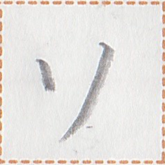

【来】
sak2
【来】
sak2

variants / 异体字 / 異体字
 【耒】
【耒】
occurrences / 出现次数 / 出現回数 : 99
Show all occurrences / 显示所有例句 / 全ての出現例を表示
彼来冠国学牌言。
zap2 sak2 ai2 sip1 nui2 pek2 zep1.
He came to the Ai'ren Republic to learn Pekzep. / 他来冠国学习牌语。
我唯心識何時汝再来？
pai2 tet hia1 can2 nan2 kak mua2 ty sak2?
I just want to know what time you'll come back. / 我只想知道你什么时候回来。
此日彼於何再来於筆処？
ka1 kia1 zap2 ie nan2 ty sak2 ie kua2 hue?
Why will she go back to Quahua today? / 她为什么今天要回笔处？
何時汝再来於汝国？一下月。
nan2 kak mua2 ty sak2 ie mua2 sip1? et2 ut2 xem1.
When will you return to your country? Next month. / 你什么时候回国？下个月。
「汝再来冠国。」「多道在。」
"mua2 ty sak2 ai2 sip1." "taun1 po1 aim2."
"Will you come to the Ai'ren Republic again?" "Maybe." / 「你会再来冠国吗？」「可能。」
全人善来冠国而学牌言。
be1 cuk2 kait sak2 ai2 sip1 ua nui2 pek2 zep1.
Everybody's welcome to come to the Ai'ren Republic to learn Pekzep. / 欢迎大家来冠国学习牌语。
我再識来彼在労終於我等銭軸。
pai2 ty can2 sak2 zap2 aim2 naip2 ta ie pai2 ge su1 la1.
I remember that he used to work at our company. / 我记得他以前在我们公司工作。
汝再来之時我行行終。
mua2 ty sak2 a kak pai2 mok1 mok1 ta.
I'll already be gone before you come back. / 你回来之前我已经走了。
彼来冠国而彼為多友。
zap2 sak2 ai2 sip1 ua zap2 zau taun1 hi1.
He made many friends after he arrived in the Ai'ren Republic. / 他到冠国后交了许多朋友。
「一上日汝使言機言来我乎？」「在。汝無手来」
"et2 sau2 kia1 mua2 sui1 zep1 kik1 zep1 sak2 pai2 yn2?" "aim2. mua2 mun1 hop1 sak2."
"Did you call me yesterday?" "Yes. You did not answer the phone." / 「你昨天给我打电话了吗?」「对啊。你不接电话。」
xizi xizi。一下日汝等何時来？
xizi xizi. et2 ut2 kia1 mua2 ge nan2 kak sak2?
Excuse me, at what time are you guys coming tomorrow? / 请问，你们明天什么时候来？
汝識来此処之字集乎？
mua2 can2 sak2 ka1 hue a man1 dat2 yn2?
Do you understand what is written here? / 你明白这里所写的吗？
汝之女上輩何時来冠国？
mua2 a sa1 sau2 huok1 nan2 kak sak2 ai2 sip1?
When will your older sister come to the Ai'ren Republic? / 你姐姐什么时候来冠国？
汝之労友何時来冠国？
mua2 a naip2 hi1 nan2 kak sak2 ai2 sip1?
When will your coworker come to the Ai'ren Republic? / 你的同事什么时候来冠国？
彼言新星善来於彼之母父。
zap2 zep1 lu2 pet2 kait sak2 ie zap2 a mam1 kuak1.
He wished his parents a happy New Year. / 他祝父母新年快乐。
二下日我行再来於刀水。
ik2 ut2 kia1 pai2 mok1 ty sak2 ie gau2 nua2.
I will go back to Gowner the day after tomorrow. / 我将在后天回到刀水。
我再来家之時我極心口。
pai2 ty sak2 mut2 a kak pai2 kit hia1 iam1.
When I came home, I felt very very hungry. / 我回到家的时候，感觉非常饿。
心与来下二杯之草茶加一杯之種茶。
hia1 tui2 sak2 ut2 ik2 niep1 a kot tia2 at et2 niep1 a det tia2.
Please bring two cups of teas and a cup of coffee. / 请来两杯茶和一杯咖啡。
目汝筆之論書別而無善識来。
ta1 mua2 kua2 a zui1 ak1 pau1 ua mun1 kait can2 sak2.
I read your paper but didn't understand it well. / 我读了你的论文，但没能很好地理解。
汝識笛琴之人何時来此処？
mua2 can2 lok1 lia1 a cuk2 nan2 kak sak2 ka1 hue?
Do you know when the musician will come here? / 你知道音乐家什么时候来这儿吗？
此日甘女与学人来終於我等之学処。
ka1 kia1 tum1 sa1 tui2 nui2 cuk2 sak2 ta ie pai2 ge a nui2 hue.
A cute female teacher came to our school today. / 今天我们学校来了个可爱的女教师。
甘蜜虫須多之集来甘蜜。
tum1 sik2 li2 ly taun1 a dat2 sak2 tum1 sik2.
Honeybees are busily collecting honey. / 蜜蜂在勤劳的采蜜。
享魚人在引来魚網。
sep mui1 cuk2 aim2 mi2 sak2 mui1 tuk2.
The fisherman is drawing in the fishing net. / 渔民在收渔网。
目其値絵即我等識来人行終多。
ta1 ze1 mak2 lek1 hem pai2 ge can2 sak2 cuk2 mok1 ta taun1.
Looking at that graph, we can see that the population has increased. / 看那张图，我们可以看到，人口已经增加。
甘蜜虫在集来甘蜜於花。
tum1 sik2 li2 aim2 dat2 sak2 tum1 sik2 ie xuo1.
The bees are collecting honey from the flowers. / 蜜蜂正在采花蜜。
Words containing this character / 包含这个磷字的词语 / この燐字を含む語 :
| hia1 sak2 | 心来 | verb | to feel | ||
| sak2 | 来 | verb | takes a place | to be from | |
| sak2 | 来 | verb | to come | ||
| sak2 | 来 | verb | takes a place | to come to | |
| can2 sak2 | 識来 | verb | to understand | ||
| ty sak2 | 再来 |  | verb | takes a place | to return to |
| ty sak2 | 再来 {於N} | verb | to return to | ||
| sak2 | 来 | verb | to be open to public and reach us | ||
| ty can2 sak2 | 再識来 | verb | to remember | ||
| ty can2 sak2 | 再識来 | clause-taker | to remember that | ||
| hia1 sak2 em | 心来如 | clause-taker | to feel like | ||
| sak2 | 来 | post-verbial particle | movement-marker of arrival | ||
| lu2 pet2 kait sak2 | 新星善来 | interjection | Happy New Year! / Happy Birthday! | ||
| sam1 sak2 | 急来 | verb | to come running |